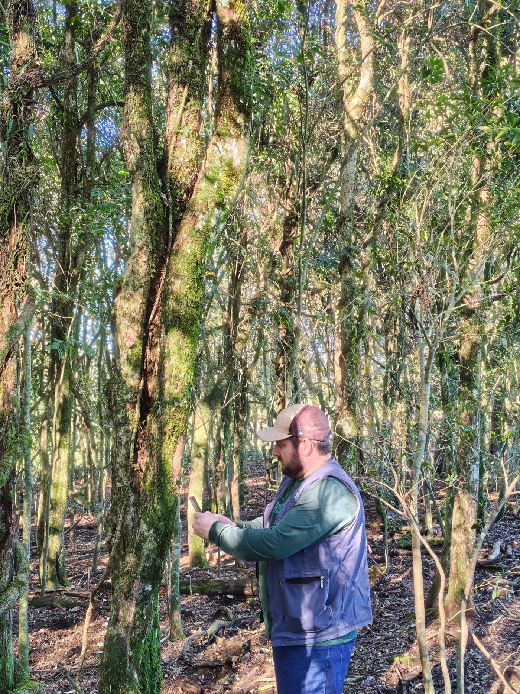
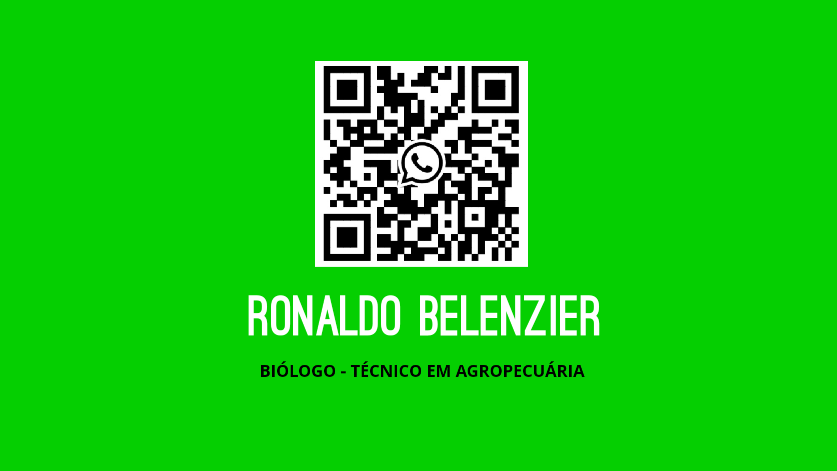

Licenciamento ambiental sem enrolação
Cuido da regularização ambiental da sua propriedade ou empresa, do diagnóstico em campo até a licença, com apoio de geoprocessamento e georreferenciamento.

Serviços
Atendo produtores rurais, agroindústrias e empresas que precisam regularizar ou ampliar suas atividades.
Licenciamento ambiental agrosilvipastoril
Licenças para bovinocultura, suinocultura, avicultura e demais atividades agrosilvipastoris.
Licenciamento de atividades industriais
Elaboração de estudos e acompanhamento do processo junto ao órgão ambiental para algumas atividades industriais.
Manejo florestal
Licenciamento e projetos para manejo florestal, com levantamento em campo.
Recuperação de áreas degradadas
Projetos de recuperação (PRAD) para devolver a função ambiental a áreas alteradas.
CAR
Cadastro Ambiental Rural: elaboração, retificação e acompanhamento da sua inscrição.
SIOUT
Cadastro e atualização de informações no sistema de outorga de uso da água.
PGRS
Plano de Gerenciamento de Resíduos Sólidos para empresas e agroindústrias.
Quem atende você
Sou Ronaldo Belenzier, biólogo com especialização em geoprocessamento e georreferenciamento e técnico em agropecuária. Conheço tanto a legislação ambiental quanto a rotina de quem produz.
Vou até a propriedade, mapeio a área e explico cada etapa do processo, para você saber o que está sendo feito e quanto tempo leva.
- Biólogo
- Especialista em geoprocessamento e georreferenciamento
- Técnico em agropecuária
Vamos conversar sobre o seu projeto
Conte qual é a atividade e onde fica a área. Respondo com os próximos passos e um orçamento.
- Telefone e WhatsApp(54) 99905 7630
- E-mailbelenzierconsultoria@gmail.com
